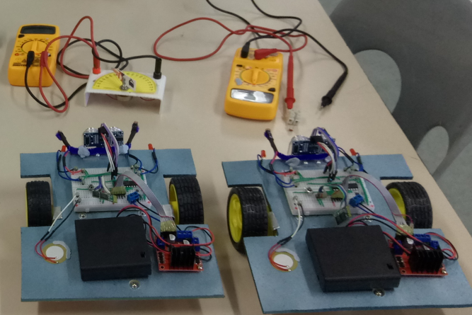
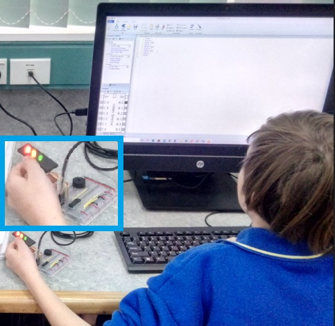
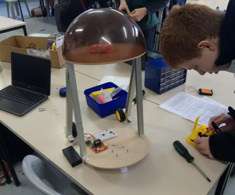
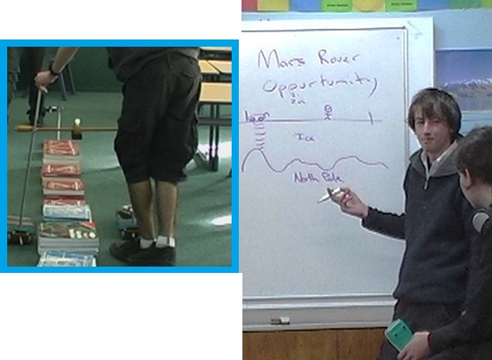

Learning Science through making: A pedagogy for all ages.
Where creativity meets circuitry, and inquiry drives innovation
Michael Fenton came to Secondary teaching with research and industry experience. He knew that learning about the world (as Science) requires technology. And new technologies require new learning about the world. They are connected.
Students in Michael's classroom learn about science by becoming scientists. His 'Maker Science' pedagogy is a blended Technology/Science approach that transforms abstract concepts into tangible devices that students build, test, and use to understand the world around them.
At the heart of Michael's pedagogy lies a simple but powerful principle: Authentic learning happens when students create things that actually work.
Rather than memorising formulas or watching demonstrations, students engage with scientific principles by constructing devices that measure, respond, and interact with their environment. This isn't just technology education or science or maths; it's all three, seamlessly integrated through the act of making.
"The richness of Maker Science: Invent commercial products, win awards, or become a data detective fact-checking the teacher and textbook concepts. Slides (PDF)
As Michael demonstrates through his RIGEL (Real-world Interactive Games and Electronics Link) system, low-cost sensors and microcontrollers can transform classrooms into innovation laboratories. Students don't just code abstract algorithms, they write programs that control traffic lights, measure temperature, detect obstacles, and even create game controllers from exercise bikes.

"Stand by for action! Game pad controllers made from old plastic lids and LDR's can control games made by other learners. Drive Stringray through narrowing tunnels as you avoid the Terror Fish!
Key principles of Maker Science
Build it, Test it, Use it.
- Students construct devices from components, learning circuit design and electronics fundamentals.
- Peer review and collaborative testing build critical thinking and debugging skills.
- Real-world applications ensure learning has purpose and context.
Input-Process-Output as a Universal Framework.
- All systems—from robots to game engines to biological processes—follow the I-P-O cycle.
- Students identify sensors (input), microprocessors (process), and actuators or displays (output).
- This framework connects computer science, engineering, biology, and physics naturally.
Low Floor, High Ceiling.
- Entry-level projects like blinking LEDs welcome beginners.
- Advanced challenges like autonomous robots, data loggers, and game-integrated sensors engage experienced makers.
- Every student finds appropriate challenges and pathways for growth.
Working Like Scientists.
- Inquiry-based mini-investigations replace lectures.
- Data collection, pattern recognition, and evidence-based conclusions mirror authentic scientific practice.
- Peer review sessions emphasize the question "How do you know?" to build scientific reasoning.
Cross-Curricular Integration.
- Projects naturally weave together mathematics (graphing sensor data), physics (electricity, forces, motion), art (designing robot bodies, game graphics), music (sound design), and communication (presenting findings).
- Game design projects add narrative, voice acting, and creative problem-solving to STEM challenges
From classroom to competitions
Michael's approach doesn't stop at individual learning. His curriculum builds toward authentic assessments: Science Fair entries, robotics competitions, and functional prototypes that solve real problems. Students might design:
- Social robots that respond to human interaction.
- Environmental monitors tracking temperature, light, or air quality.
- Accessibility devices like CPR training simulators with pressure sensors.
- Game controllers that turn physical movement into digital input.
- Security systems using infrared detectors and ultrasonic rangefinders.
Each project requires students to identify a need, prototype a solution, test iteratively, and present their work—mirroring the engineering design process professionals use daily.
The RIGEL innovation: Games meet sensors
One of Michael's signature innovations demonstrates how far this pedagogy extends. Through RIGEL, students connect DIY sensors to game engines, creating interactive experiences where:
- Exercise bike pedaling controls a spaceship's altitude in a flight simulator.
- Light-dependent resistors detect player movement in physical space.
- Temperature sensors trigger game events based on environmental conditions.
- Game controllers that turn physical movement into digital input.
- Distance sensors enable gesture-based game controls.
This isn't gaming for entertainment—it's using game engines as data visualization tools and interactive laboratories. Students learn about feedback loops, calibration, data smoothing, and real-time systems while creating experiences that feel like play but teach like experiments.
Why Maker Science matters
In an era where technology pervades every aspect of life, understanding how devices work empowers students beyond career preparation—it builds agency. Michael's students don't just consume technology; they create it, modify it, and use it to answer questions that matter to them.
The pedagogy accommodates different ways of learning: hands-on using components, visual information is presented in circuit diagrams, logical thinking debugs code, and creativity and imagination determines design aesthetics and narratives. By integrating arts alongside STEM, Maker Science becomes STEAM—science, technology, engineering, arts, and mathematics in authentic collaboration.
Perhaps most importantly, this approach makes abstract concepts concrete. Voltage isn't just a number in a textbook — it's the force that lights an LED. Temperature isn't just about reading a thermometer — it's data students collect, graph, and analyze from sensors they've built. Algorithms aren't mysterious computer instructions — they're step-by-step directions students write to solve problems they've identified.
The bigger picture
Michael's work extends beyond individual classrooms. His conference presentations, YouTube documentation, and open-source RIGEL system share these methods with educators globally. By demonstrating that sophisticated learning experiences don't require expensive equipment—his universal sensor interfaces cost just a few dollars—he makes maker pedagogy accessible to schools regardless of budget.
The philosophy underlying this work connects to broader educational movements: constructionism (learning through making), inquiry-based learning (student-driven investigation), and authentic assessment (demonstrating competence through real-world performance). But Michael's contribution is making these theories practical and replicable.
Conclusion
Michael Fenton's Maker Science pedagogy proves that when students build things that work, they develop deep understanding that transcends traditional subject boundaries.
By combining hands-on construction with scientific inquiry, creative problem-solving with technical skill-building, and individual exploration with collaborative review, this approach prepares students not just for STEM careers but for engaged citizenship in a technological world.
In classrooms where making drives learning, science becomes something students do, not something they merely study. And that transformation, from passive recipient to active creator, may be the most important lesson of all.

"R2D2 Recycled parts for the body, donated TV remote controls to operate, solderless breadboard to test circuits, Picaxe 20M2 for coding in Picaxe BASIC. A Beginner project for teachers as well as students!
YouTube videos
Michael has documented the simple assembly process and working principles in YouTube videos. He also tests ideas in his home lab and uses TV and movie props to inspire learners. Some of these are listed here.
Getting started
For educators interested in implementing Maker Science:
- Start small: Begin with simple LED circuits and basic sensors like light-dependent resistors
- Be safe: Test these simple sensors YOURSELF, to provide components that work in a predictable way AND to know how to safely use them. This avoids learner frustration, allows you to guide students, but also models that scientists work carefully!
- Embrace iteration: Build the culture of "Build it, Test it, Use it" from the first lesson
- Connect to interests: Let students choose applications that matter to them—robots, games, environmental monitoring, or artistic installations
- Celebrate failure: Debugging and troubleshooting are learning opportunities, not setbacks
- Document learning: Have students maintain design journals, take photos, and present their work
- Encourage critical thinking: Have students work like scientists, able to ask, and be asked, "but how do you know?"
- HAVE FUN!
The tools are accessible: Begin with cheap, easy to code PICAXE microcontrollers, breadboards that do not require soldering, low-cost sensors, and free programming environments. As a whole, this puts sophisticated projects within reach. Michaels YouTube videos show plenty of examples using Picaxe chips.
The curriculum is adaptable: Core concepts scale from primary to secondary levels.
The outcomes are measurable: Students produce working devices that demonstrate understanding. Peer-review is encouraged. SOLO taxonomy (Biggs and Collis, 1982) is useful here, and your teaching style (see the Teaching Perspective Inventory ) can easily adjust to the level you are teaching and the individual lesson in the sequence. You are likely to use a teacher-centred approach to begin with, transitioning to learner-centered experiences.

You can see this in the Appled Robotics unit here.
Example implementation: The Applied Robotics unit
Sessions 1-3: Students explore sensors as analogues to human senses, identify the "sixth sense" (proprioception—spatial awareness), and investigate electricity fundamentals with hands-on multimeter work. They build simple robots from card templates, learning Input-Process-Output principles through construction.
Sessions 4-7: Mini-inquiries drive modification and optimization. Students transform basic robots into specialized machines: light-seeking robots, line-followers, obstacle avoiders, or sumo competitors. Each modification requires understanding sensor behavior, motor control, and environmental interaction.
Sessions 8-9: Students repurpose robot components as data loggers, connecting classroom learning to real-world applications in health monitoring, environmental science, or home automation. The final sessions offer open-ended exploration: advanced coding, new sensor experiments, or competition preparation.
Session 10: Assessment through demonstration, not just testing. Students present working prototypes and explain their design decisions, troubleshooting processes, and scientific understanding.